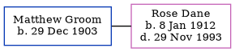

Matthew D Groom 1903 -
[ Home ] | [ Calendar ] | [ Surnames Index ] | [ Errors ] | [ Family History ]Matthew Groom, the husband of Rose Victoria Dane (the second cousin twice-removed on the mother's side of Nigel Horne), was born on 29 Dec 1903. He married Rose in Faversham, Kent, England around Aug 19361.
Citations
- England & Wales Marriages 1837-2005 - Findmypast
Media
England & Wales marriages 1837-2005 Transcription - BMD-M-1936-3-AZ-000382-034
1939 Register Transcription - TNA-R39-1716-1716H-024-20
England & Wales marriages 1837-2005 - BMD/M/1936/3/AZ/000648/058
Family Tree
Map
Generated by ged2site. Last updated on Jul 3, 2024
Known Issues
Birth date (29 Dec 1903) has no citations
Date of birth is known, but not place